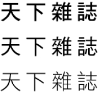
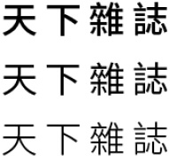

文字 Typography
這是一段介紹。《天下雜誌》使用顏色來傳達界面中的功能，便於我們建立系統性視覺範本，讓《天下》紙本可以。白、黑、藍、紅，是《天下》數位產品的顏色。顏色沒有先後順序，重要的是哪種顏色最適合傳達你想要的信息。
字體使用原則
- 保持字體原本的設計，不任意改變字體寬高比例。
- 非設計效果的內文字體，不傾斜、不加粗、不陰影、不加外框。
- 用字單純，以達成簡潔、大器的視覺形象。限制字型、大小及粗細的樣式數量。同一版面以不超過三款樣式為原則。
中文字型 ： 使用jf金萱體、Noto Sans TC、華康黑體
jf 金萱體

思源黑體

華康黑體

英文字型 ： 使用Zapf、Avenir、Arno Pro